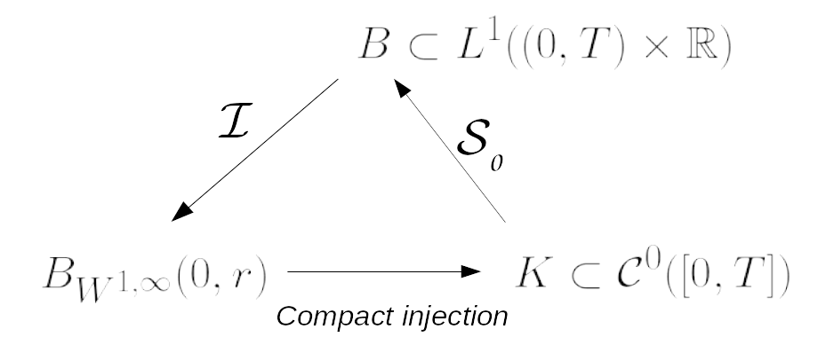
An abstract existence result for generalised Hughes’ model
Presented in Roma, Bangalore, Rouen and Tours
I have a post-doctorate position in the Laboratoire Jacques Louis Lions in Paris. My research mostly focus on first order non-linear equations, you can find more about it in the research section. These equations can model the pedestrian flow in evacuation contexts. You can find results of simulations in the simulation section. Apart from the theoretical research, I also create synthesizers and scenography. These activities have their respective sections.

Presented in Roma, Bangalore, Rouen and Tours
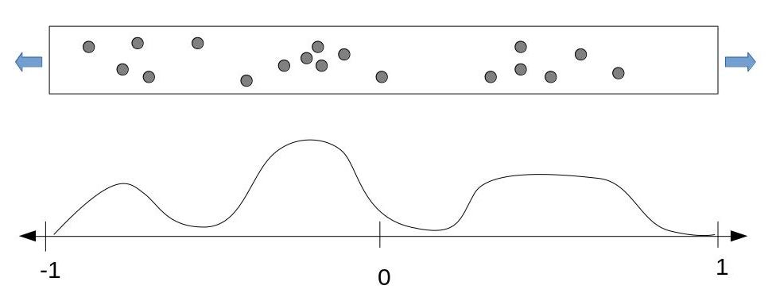
Introductive presentation in Nouant-Le-Fuzelier
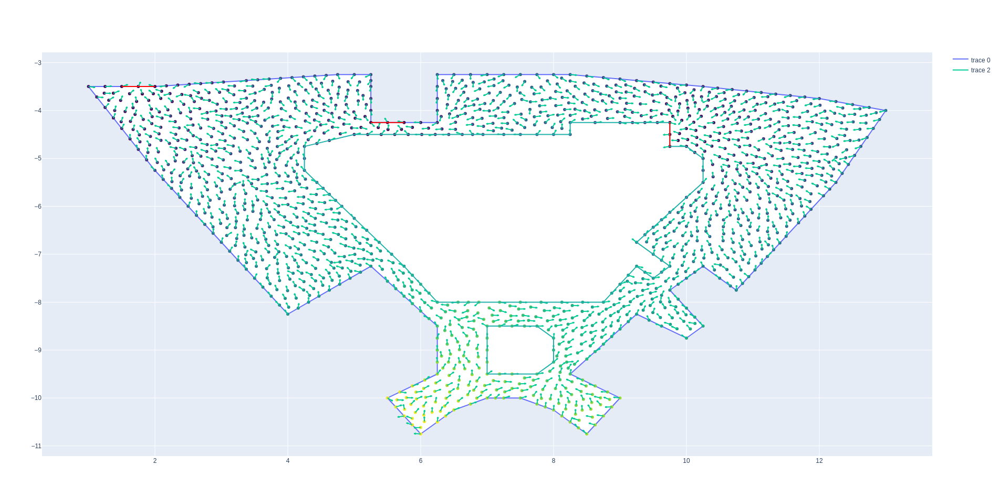
Presented in Orleans and Valparaiso
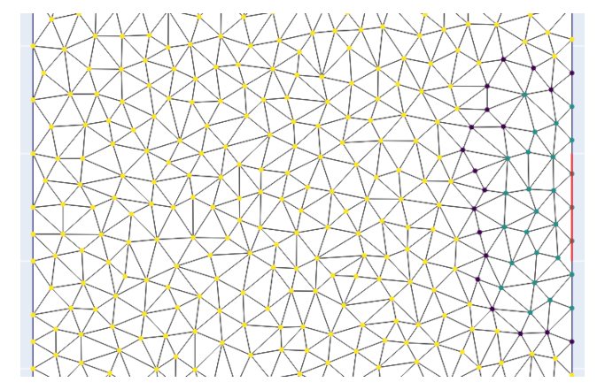
Presented in Besançon
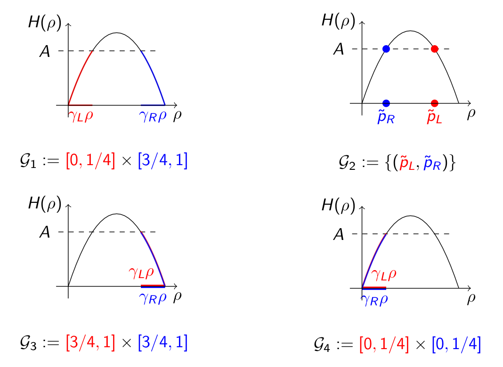
Presented in Besançon
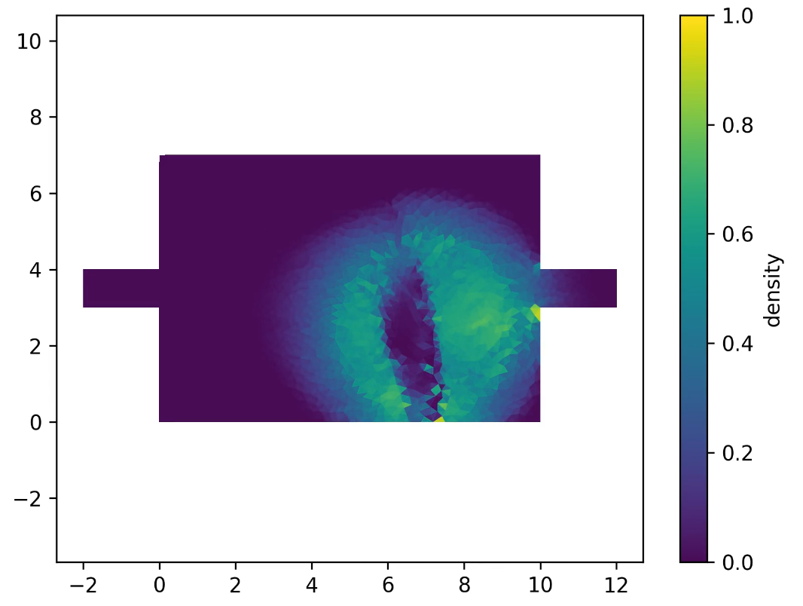
Presented in Montpellier
I teach mathematics and computer science in the university of Tours and the Supinfo school. Here is a list of the subject I taught:
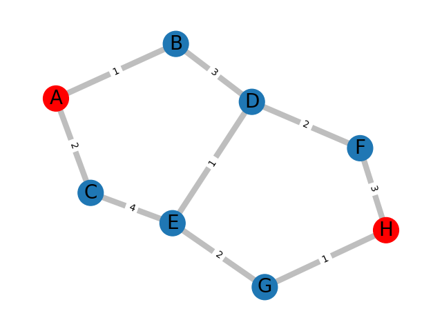
For MECEN students
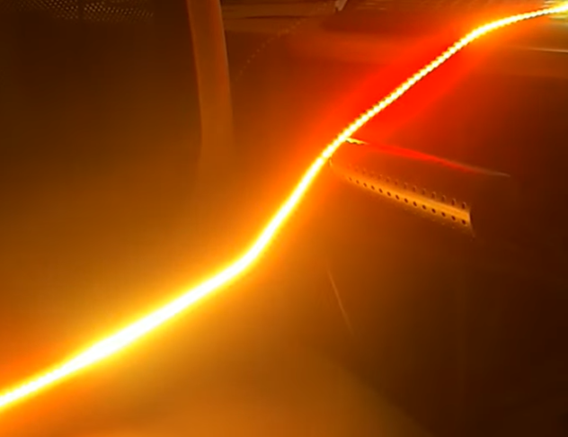
Résumé...
The musical instruments I make are synthesizers inspired by wind instruments. The Polyclav is a numeric modular synth made to be compatible with the DM48 midi harmonica from Lekholm instruments. The Soubasynth is a synth inspired by the sousaphone. The Brassynth is an improved and portable version of the Soubasynth compatible with trombone and trumpet mouthpieces. The Soubasynth and the Brassynth both use a Bela board. This constructor made a post about my instruments on their blog.
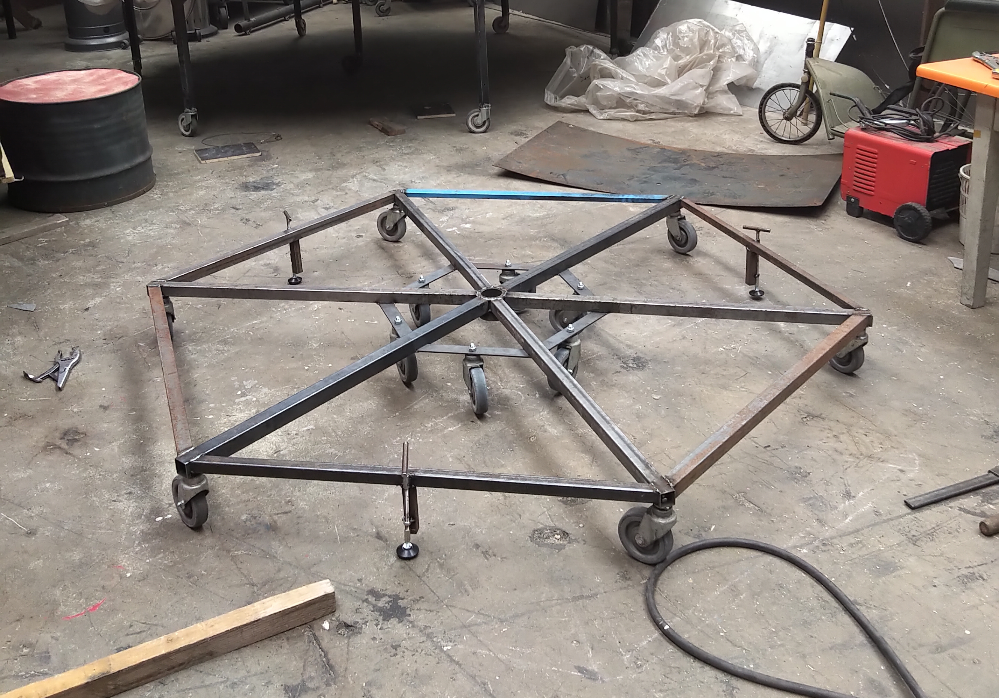
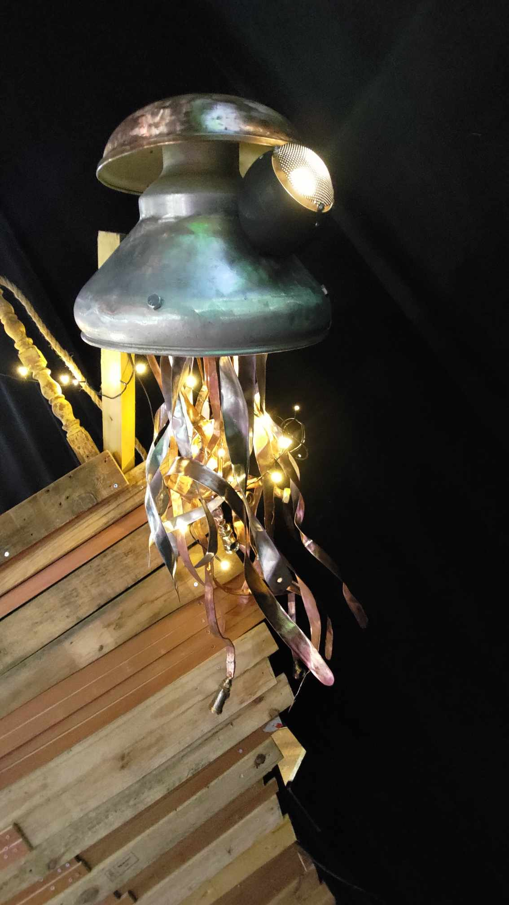
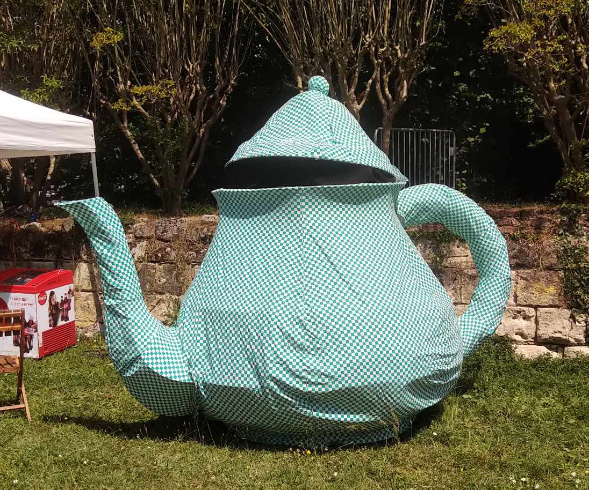
You can contact me by e-mail at theo.girard /@/ math.cnrs.fr
Bureau : E1350 bâtiment E2
Faculté Sciences et techniques, Campus Grandmont
40 avenue Monge
37200 Tours, France